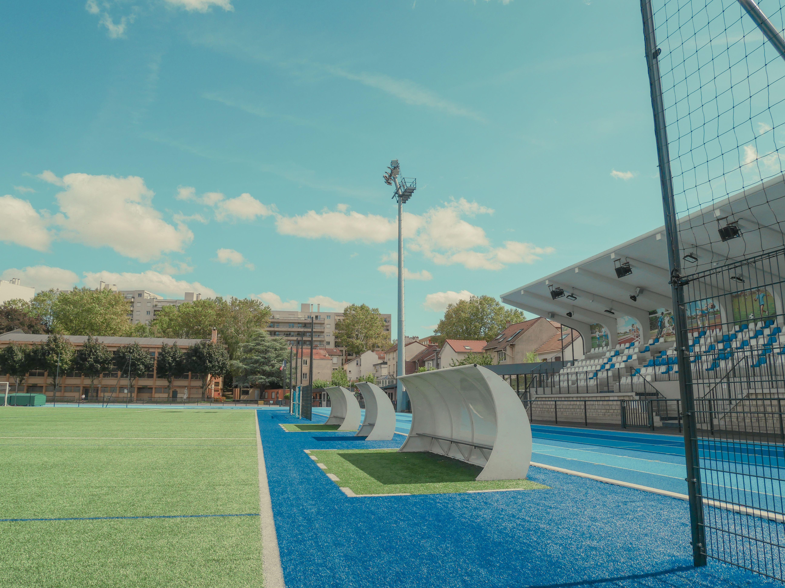

Lieu et accès
La Nanterre Footcup se déroule directement sur les installations sportives extérieures (terrains synthétiques) du campus de l'Université Paris Nanterre (200 Avenue de la République, 92000 Nanterre).
- RER A : Station Nanterre-Université (à 5 minutes à pied des terrains).
- Train Ligne L : Gare de Nanterre-Université depuis Paris Saint-Lazare.
- Bus : Lignes 259, 304, 367 (arrêt Université Paris Nanterre).

Équipement et matériel
Pour garantir la sécurité des joueurs et préserver la qualité des pelouses synthétiques du campus :
- Chaussures obligatoires : Chaussures de foot stabilisées (turf) ou baskets à semelles plates. Les crampons moulés ou vissés en métal sont strictement interdits.
- Tenue : Maillots ou chasubles fournis par l'organisation au moment de l'émargement.
- Protections : Protège-tibias fortement recommandés.
- Hydratation : Pensez à apporter votre gourde (points d'eau accessibles à proximité des vestiaires).
Accessibilité et accueil du public
L'événement est ouvert gratuitement aux spectateurs, étudiants et personnels de l'université. L'ensemble du site, des vestiaires ainsi que le village d'animations (stands restauration, associatifs et souvenirs) sont accessibles aux personnes à mobilité réduite (PMR).